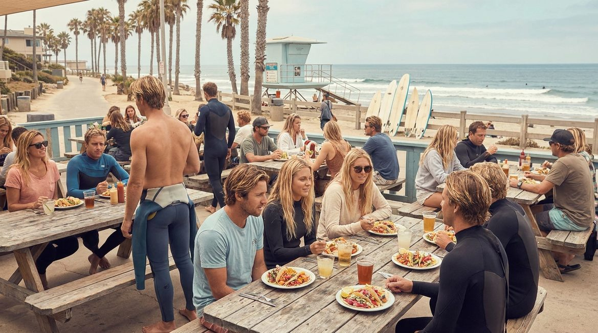
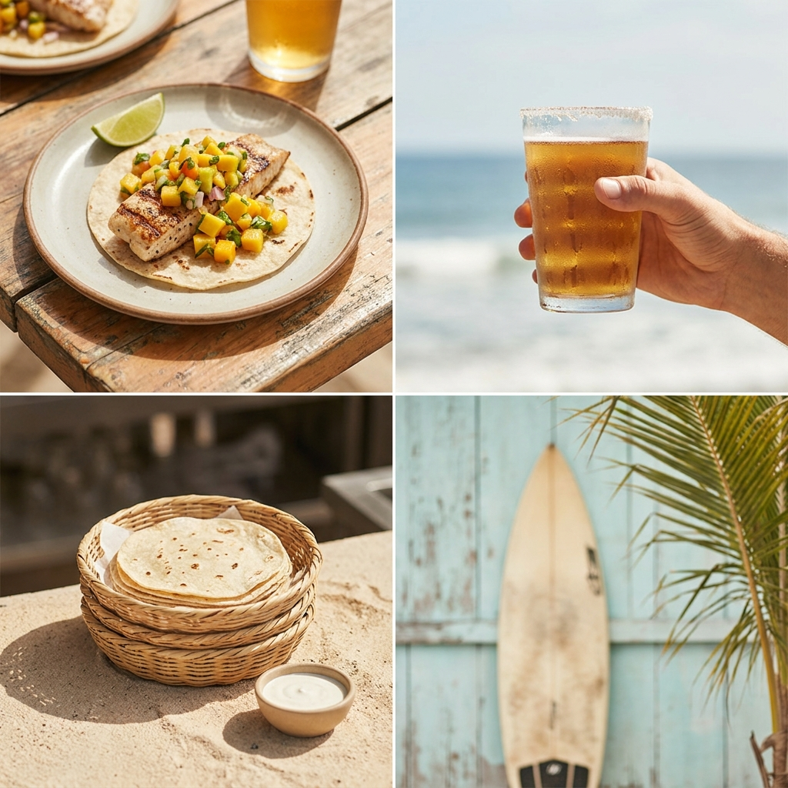
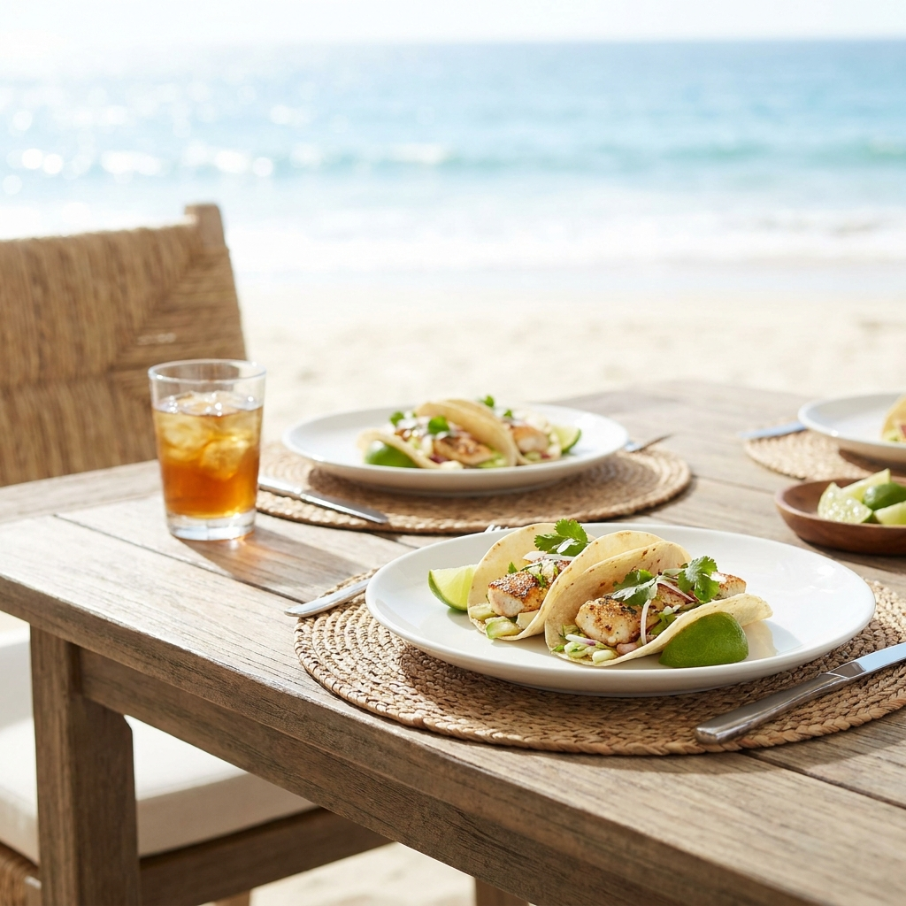
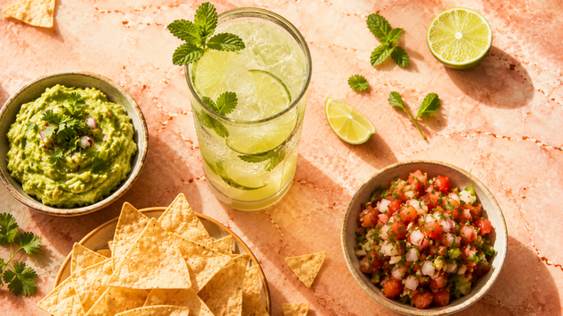

Fish Taco Restaurant
Pelican & Lime for beachgoers, surfers, and locals in a San Diego beach town — drive walk-in visits and online pickup orders. Beer-battered wild-caught fish.
Drive walk-in visits and online pickup orders.



Pelican & Lime for beachgoers, surfers, and locals in a San Diego beach town. Start your order today.